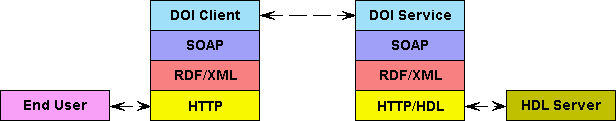
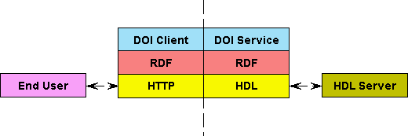

|
The application interop stack for DOI Client/Service exchange is shown below both for a distributed (web services)
implementation and for a tightly coupled (or localized) implementation (eg a browser plugin).
|

Distributed DOI Client/Service implementation.
|
For the centralized implemenatation no transport layer is required - so we can omit the SOAP layer and the XML
serialization. The resources are managed in some native RDF representation.
|

Localized DOI Client/Service implementation.
|
|